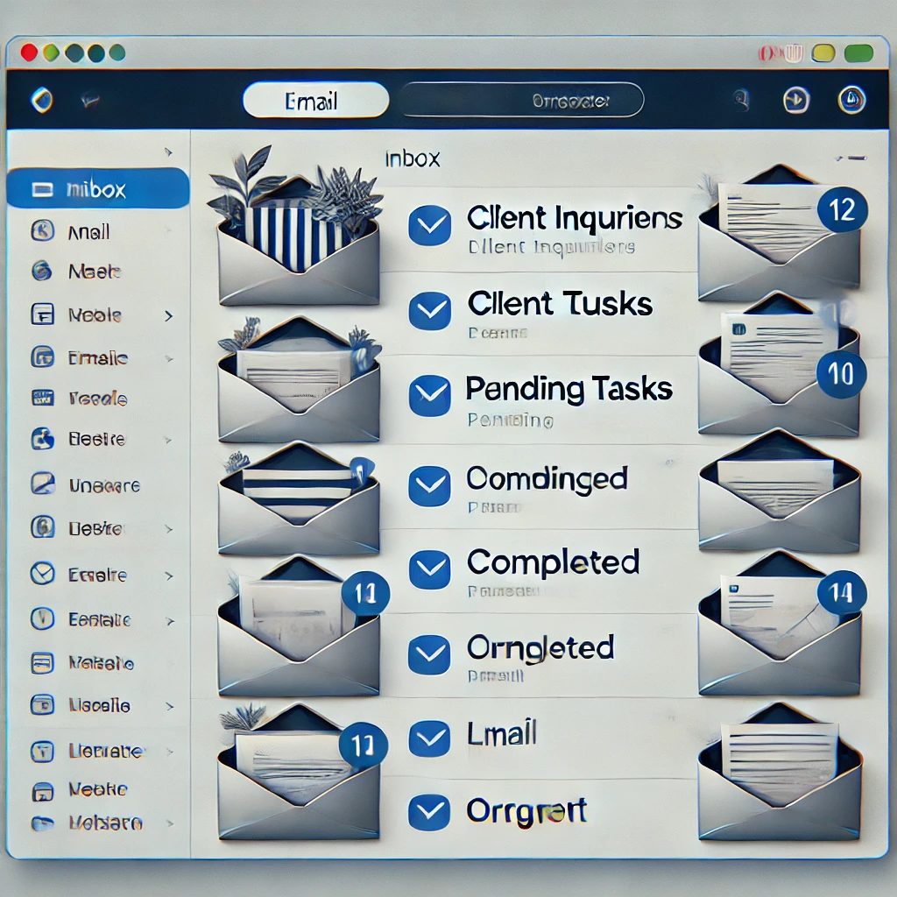
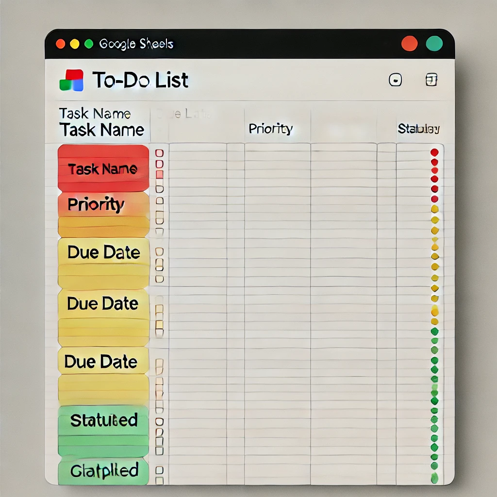
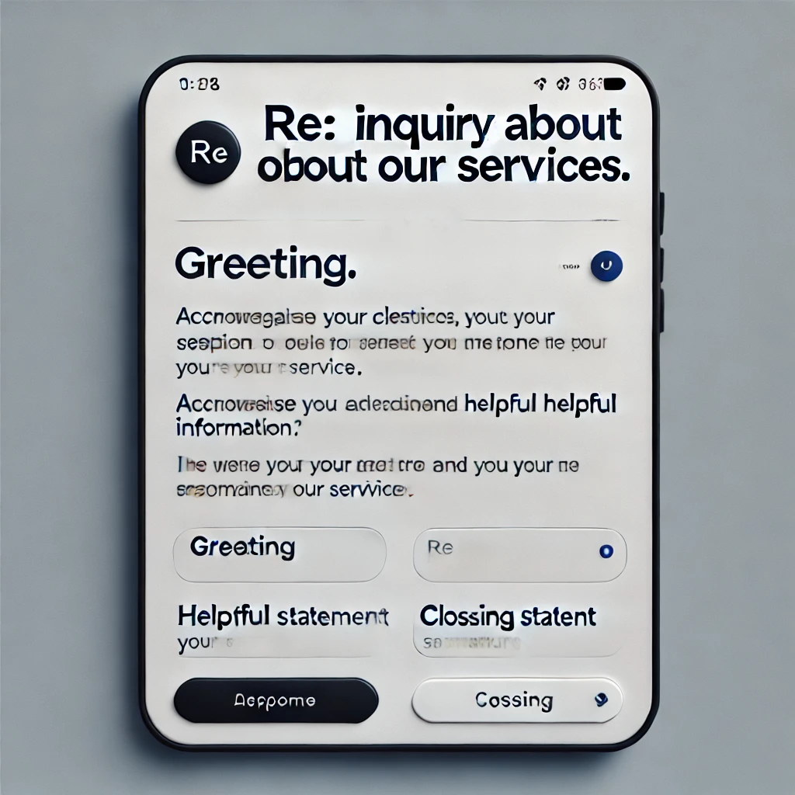
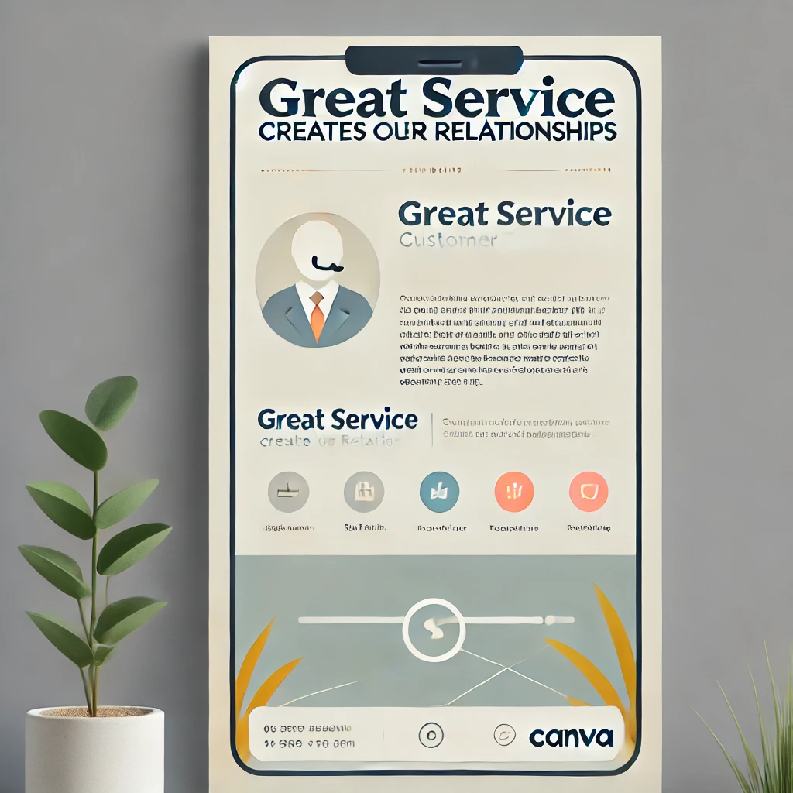

About
Me:
For the past 4 years, I’ve worked as a Customer Service Representative in a leading company at BGC. I loved helping customers, but the long hours and daily 6-hour commute made me rethink my career path. That’s when I discovered Virtual Assistance—where I can use my skills to help businesses while working remotely. Now, I’m ready to bring my expertise in communication, problem-solving, and organization to your team!
Key Strengths:
🔹 Strong communication skills (email, chat, and phone support)
🔹 Highly organized and detail-oriented
🔹 Fast learner with tech adaptability
🔹 Problem-solver with excellent customer service experience
Education
Cavite State University – Bacoor Campus
Bachelor of Science in Business Administration, Major in Marketing Management
August 2014 - May 2018
Skills
-
Administrative Support
- Email and calendar management
- Data entry and documentation
- Appointment scheduling
-
Customer Service & Communication
- Handling emails, calls, and live chat professionally
- Resolving client concerns efficiently
- Building relationships with customers
-
Tech & Tools (Even if she’s a beginner, listing familiar tools can help)
- Google Workspace (Docs, Sheets, Gmail, Calendar)
- CRM Systems (Basic knowledge)
- Zoom, Slack, and Microsoft Teams
-
Social Media & Marketing Support (Basic, but shows willingness to learn)
- Familiarity with Facebook & Instagram
- Responding to inquiries via social media
Why Hire Me?
I may be new to Virtual Assistance, but my 4 years of customer service experience have prepared me well for this role. I’m excellent at managing emails, organizing schedules, and assisting clients professionally. Plus, I’m highly adaptable and eager to learn new tools and workflows to support your business. Let’s work together!
PORTFOLIO
Inbox Management Demo

Task Management Example

Customer Service Sample

Basic Social Media Post (Canva)
